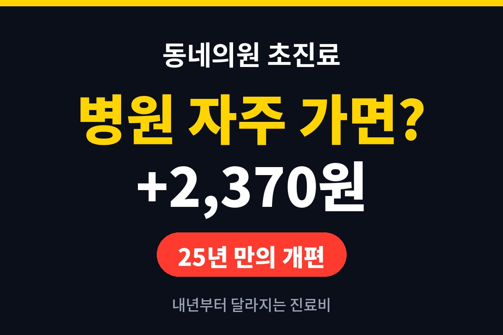
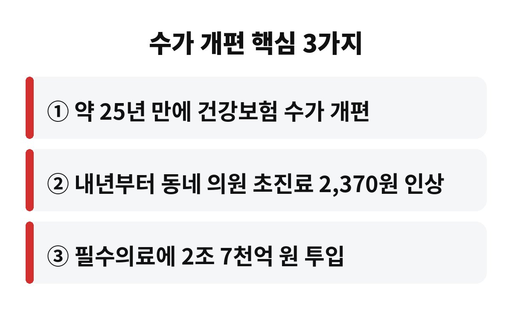
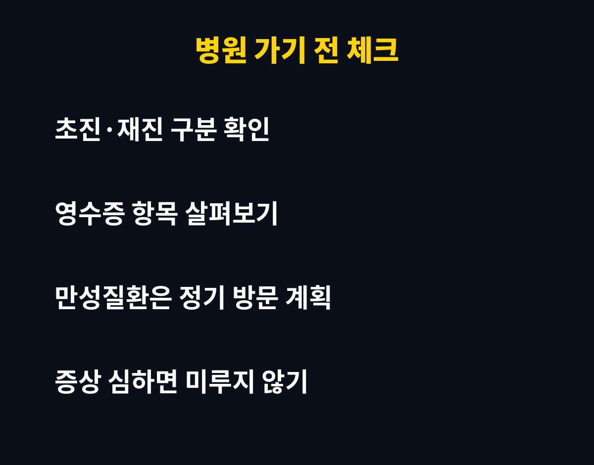

동네의원 초진료는 내년부터 2,370원 오르는 것으로 알려졌어요. 약 25년 만에 건강보험 수가가 개편되면서 나온 변화예요.
감기나 혈압 때문에 병원을 자주 가는 직장인이라면 "그럼 내 지갑에서는 얼마가 더 나가는 거지?" 궁금하실 텐데요, 차근차근 짚어볼게요.
먼저 용어부터 정리할게요. 초진료는 처음 진료를 받을 때 의원에 지급되는 진료 기본 비용이에요. 이 기준이 되는 값을 '수가'라고 부르는데, 건강보험이 정해주는 병원 서비스의 가격표 같은 거죠.
이번에 알려진 내용은 약 25년 만의 수가 개편이고, 그 안에서 동네 의원 초진료가 2,370원 오른다는 거예요. 여기에 필수의료 쪽으로 2조 7천억 원이 들어간다고 해요. 큰 방향은 "꼭 필요한 의료를 지키자"에 가깝습니다.
여기서 많이 헷갈리세요. 2,370원은 진료 기본 비용 자체가 오르는 폭이에요. 우리가 창구에서 내는 돈은 그중 본인부담 비율만큼이라서, 보통은 올라가는 금액보다 적게 느껴질 수 있어요.
다만 나이, 병원 종류, 진료 내용에 따라 본인부담이 달라지기 때문에 "내 실제 부담은 정확히 이만큼"이라고 딱 잘라 말하기는 어려워요. 정확한 금액은 내년 시행 후 진료비 영수증에서 확인하는 게 가장 확실합니다.
한 줄 요약 박스
| 개편 시점 | 약 25년 만의 건강보험 수가 개편 |
| 동네의원 초진료 | 내년부터 2,370원 인상 |
| 추가 투입 | 필수의료에 2조 7천억 원 |

가장 현실적인 팁은 "아플 때까지 참지 않기"예요. 진료비가 조금 오른다고 병원을 미루면 오히려 병이 커져서 더 큰 비용이 들 수 있거든요. 특히 혈압이나 당뇨처럼 꾸준히 관리해야 하는 병은 정기 방문 일정을 미리 정해두는 편이 좋아요.
또 하나, 영수증을 한 번씩 살펴보는 습관을 들여보세요. 초진인지 재진인지, 어떤 항목이 붙었는지만 알아도 "왜 이 금액이지?" 하는 의문이 확 줄어요.

부모님 모시고 병원 자주 가는 가정, 감기 잦은 아이를 키우는 집, 그리고 평소 동네 의원을 단골로 다니는 분들이 가장 먼저 체감하실 거예요. 한 번의 차이는 작아 보여도, 자주 가는 분들에겐 쌓이는 금액이거든요.
반대로 동네 의원이 안정적으로 운영되면 가까운 곳에서 진료받을 수 있는 환경이 유지된다는 장점도 있어요. 결국 "조금 더 내고 가까운 병원을 지키느냐"의 이야기이기도 합니다.
가격표가 바뀌면 사람들의 선택도 조금씩 바뀌어요. 가벼운 증상은 집에서 하루 이틀 지켜보고, 오래 가거나 점점 심해지면 그때 병원에 가는 식으로요. 이런 판단이 나쁜 건 아니지만, 고열이 이어지거나 숨이 차거나 가슴이 답답하다면 비용 때문에 미루지 마세요. 이런 신호는 시간이 곧 건강이에요.
반대로 만성질환이 있는 분은 약이 떨어지기 전에 미리 예약해서 가는 게 좋아요. 약이 끊기면 상태가 흔들려서 결국 더 자주, 더 크게 병원 신세를 지게 될 수 있거든요. 동네의원 초진료가 오르는 것과는 별개로, 꾸준한 관리가 장기적으로는 가장 싼 선택입니다.
마지막으로, 건강보험 제도 관련 소식은 시행 직전에 세부 내용이 바뀌기도 해요. 내년 시행 시점에 가까워지면 공식 안내를 한 번 더 확인해 보시길 권해요.
여러분은 한 달에 병원을 몇 번 가시나요? 댓글로 알려주세요. 도움이 됐다면 구독해 두시면 생활 밀착 건강 이슈를 가장 먼저 받아보실 수 있어요.
※ 이 글은 일반적인 건강 정보이며 진단·치료를 대신하지 않습니다. 증상이 있다면 반드시 전문의와 상담하세요.